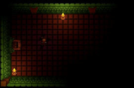
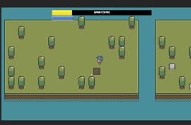
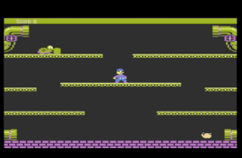
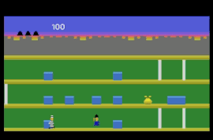
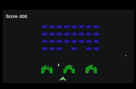
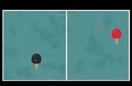

Projetos
-

Fox Adventure
Embarque com uma raposa corajosa por uma floresta repleta de perigos. Pule, corra e desvie de armadilhas enquanto enfrenta inimigos selvagens para encontrar o caminho de volta para casa. Uma jornada cheia de desafios, descobertas e natureza viva!
-

Live In City
Construa a cidade dos seus sonhos com estratégia e visão! Use cartas para adquirir lotes, erguer prédios e fazer upgrades. Equilibre economia, população e serviços enquanto sua cidade cresce. Inspirado em SimCity, mas com um toque único de gerenciamento por cartas.
-

RPG Adventure
Explore terras mágicas, lute contra monstros lendários e colete tesouros épicos. Personalize seu herói e viva uma jornada de fantasia repleta de perigos, escolhas e descobertas surpreendentes!
-

Like Forager
Um menino corajoso em um mundo cheio de desafios! Colete recursos, fabrique pontes para explorar novas ilhas e sobreviva a inimigos fofamente perigosos. Evolua, expanda seu território e descubra segredos neste jogo viciante de aventura e exploração!
-

Rise Mario Bros
Reviva a nostalgia com esta recriação do clássico Mario Bros do Atari 5200! Um jogo retrô cheio de ação e desafios, com fases inspiradas no original e jogabilidade fiel às origens.
-

Rise KeyStone Kapers
Reviva o clássico Keystone Kapers do Atari 2600! Assuma o papel do policial Keystone Kelly em uma corrida contra o tempo para capturar o ladrão Harry Hooligan em andares cheios de obstáculos e ação nostálgica.
-

Rise Space Invader
Reviva o lendário Space Invaders do Atari! Enfrente ondas de alienígenas descendo em formação, defenda a Terra com precisão e reflexos rápidos, e experimente a essência dos clássicos dos fliperamas.
-

Rise Pong
Reviva o clássico Pong, o primeiro grande sucesso dos videogames! Controle sua raquete, rebata a bola e desafie o oponente em partidas cheias de reflexo e precisão retrô.